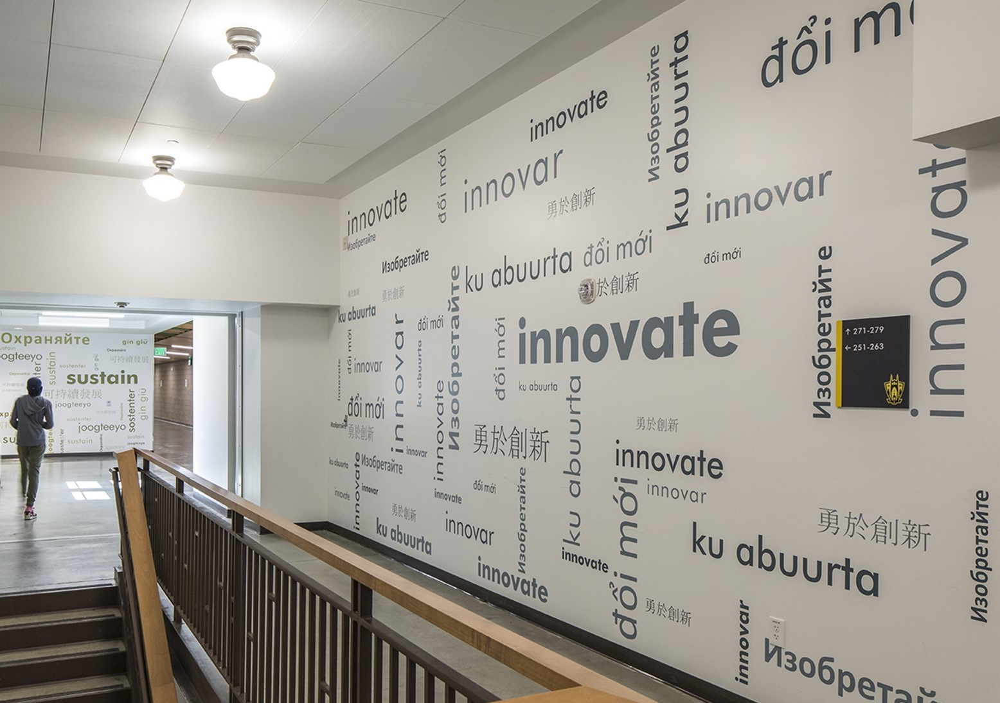

← Return to Volunteer Page

Time Commitment of approximately 6 hours/month.
Participation will primarily virtual and over email.
We are seeking 2 volunteers for this role.
Volunteers should have an interest in communications, and prior experience
with social media for personal use.
Our social media reach is growing, and we are looking to put out more content that engages our alumni. Alumni enjoy learning
more about our school history, reminiscing on fond memories, and getting information on events they can attend. By posting more
often, and content of high quality, we can keep our audience interested in our work and interested in supporting Roosevelt. We also
want to work on reaching more alumni, a topic the Communications Committee is currently working on learning more about.
Duties & Responsibilities
- Attend all Communications Committee meetings - at least once per quarter.
- Meetings will take the form of in person or virtual/email depending upon the needs of those participating.
- Create at least one post per week on both Facebook and Instagram.
- Members will either choose topics or be given ideas to create with.
- Assist in editing posts drafted by other members.
- Communications Members will work together to craft posts.
- Participate in the development of strategies to reach new alumni audience members and continue to grow our reach.
Interested in volunteering? Send an email to our Communications Chair at megan@rooseveltalumni.org
with the subject line "Social Media Assistant" to learn more.
We can't wait to have you join us!